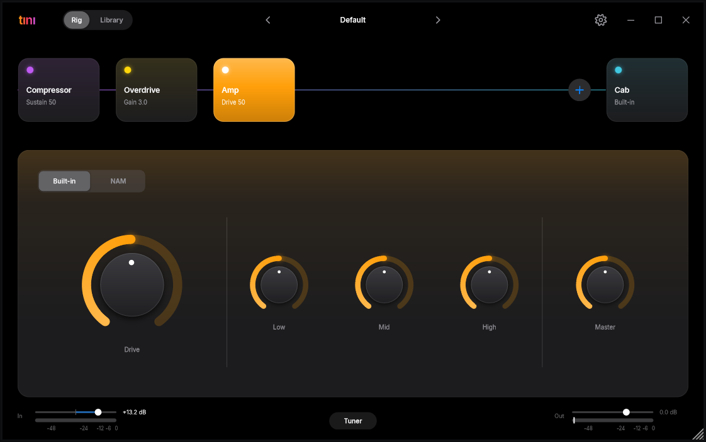

Neural Amp Modeler
Load .nam captures into the amp slot, or as pedals. Each pedal is named after its model.
Free · Open source · Windows
Neural Amp Modeler captures, cabinet IRs and a pedal board you can rearrange. Runs on its own or as a VST3 plugin in your DAW.
Download for Windows View source
Version 0.1.0 · Windows 10/11, 64-bit · AGPL-3.0

Load .nam captures into the amp slot, or as pedals. Each pedal is named after its model.
Drop in your own impulse responses for the cabinet.
Noise gate, compressor, boost, overdrive, chorus, delay, reverb. Drag to reorder the chain.
Your models, pedals and IRs in one place, filtered by make, model, tone and type. Drop files or zips on the window to add them.
Save and load presets. Built-in tuner.
ASIO support, and the standalone shows the real round-trip latency of your audio device.
Get the latest release from the Releases page.
Standalone: unpack and run Tini.exe, then pick your audio device in Settings.
Plugin: copy Tini.vst3 to C:\Program Files\Common Files\VST3 and rescan plugins in your DAW (Reaper, Ableton Live 10.1+ and other VST3 hosts).
tını does not ship with models. Browse TONE3000 for free .nam captures and IRs, then drop them on the window.
tını is a hobby project and the download is not code-signed, so SmartScreen warns about it. Click More info, then Run anyway. The source is public, you can build it yourself.
For the lowest delay use an ASIO driver (your audio interface's own, or FlexASIO / ASIO4ALL) and set the buffer to 256 samples or less.